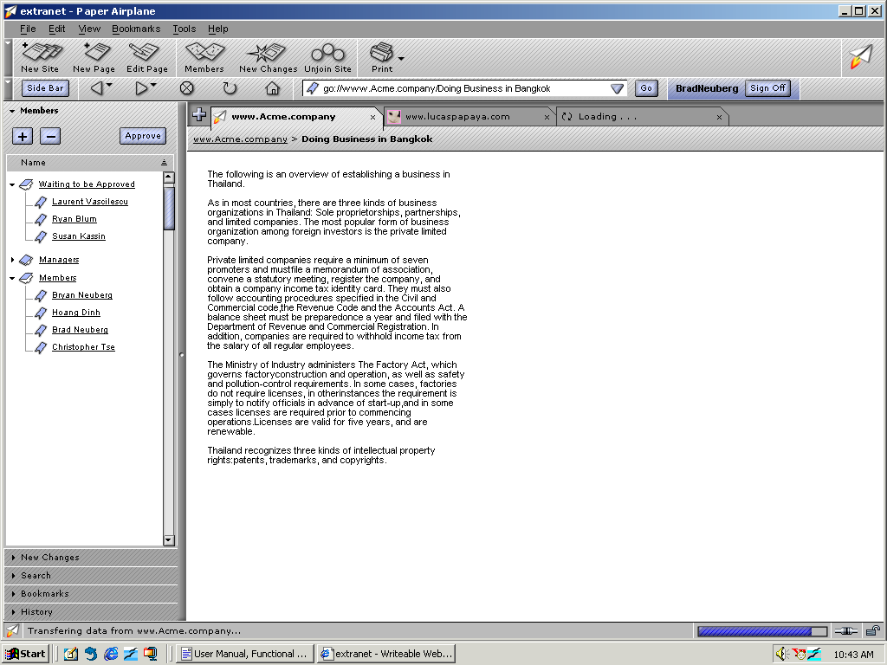
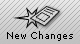

| | |
Table of Contents | Last | Next
Walkthrough - Next-Generation Browsing
Powerful Tools to Track Site Members and New Changes
Every Two Way Web Site provides easy access to finding out the members of a site and whether any new changes have occurred while you were away. To see who are the Managers and Members of a site, press the Members button:

The Members Button
This will open the Sidebar to show the Members Panel:

The Members Panel in the Sidebar
To track any recent changes to the current Two Way Web Site, press the New Changes button:

The New Changes Button
This will open the New Changes Panel in the Sidebar:

The New Changes Panel in the Sidebar
Use this panel to quickly come up to speed on what pages have changed today, yesterday, or more. As pages are changed by other members on the current Two Way Web Site, these changes will register in this panel.